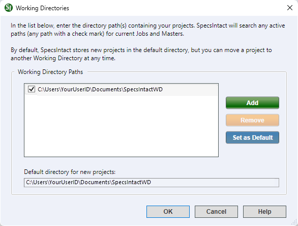

This command can also be executed from the SpecsIntact Explorer's th.
The Working Directories window is utilized to configure and manage project Working Directories, offering capabilities to add, remove, and designate a default. The Working Directories are an integral component of SpecsIntact, serving as the repository for all Jobs and Masters. The system allows the configuration of one or multiple Working Directories, each designed with a distinct internal structure for storing Jobs, Masters, Templates, and Exports.
Installing SpecsIntact for the first time, you will have the option to use the default Working Directory path on your local drive or connect to a Working Directory on your network drive instead. The default Working Directory is C:\Users\YourUserID\Documents\SpecsIntactWD. The Jobs and Masters within the selected Working Directory will appear in the SpecsIntact Explorer's Available Projects panel.
 For new installations or to learn more about setting up one or more Working Directories, refer to the Installation Guide on the SpecsIntact Website Support & Help Center page.
For new installations or to learn more about setting up one or more Working Directories, refer to the Installation Guide on the SpecsIntact Website Support & Help Center page.
 For optimal organization when using multiple Working Directories, you should create a dedicated Working Directory specifically for Masters. This centralized location prevents you from having multiple copies of the same Master in other project-related folders.
For optimal organization when using multiple Working Directories, you should create a dedicated Working Directory specifically for Masters. This centralized location prevents you from having multiple copies of the same Master in other project-related folders.
 To learn about the benefits associated with archiving inactive projects, refer to the FAQ Archive Inactive Projects topic.
To learn about the benefits associated with archiving inactive projects, refer to the FAQ Archive Inactive Projects topic.
 Avoid connecting or setting up a Working Directory in OneDrive. Microsoft OneDrive does not provide data integrity for remotely sharing SpecsIntact projects and has been known to cause issues connecting and accessing Masters. If you do attempt to use a OneDrive location as a Working Directory, the software will provide a warning that OneDrive can potentially corrupt SpecsIntact data. While the software will issue a warning, you can bypass it at your own risk. Instead of placing the Working Directory within OneDrive, consider establishing a dedicated backup folder in OneDrive (e.g., SpecsIntact Backups or SI Backups) using the SpecsIntact Explorer's Backup and Restore feature.
Avoid connecting or setting up a Working Directory in OneDrive. Microsoft OneDrive does not provide data integrity for remotely sharing SpecsIntact projects and has been known to cause issues connecting and accessing Masters. If you do attempt to use a OneDrive location as a Working Directory, the software will provide a warning that OneDrive can potentially corrupt SpecsIntact data. While the software will issue a warning, you can bypass it at your own risk. Instead of placing the Working Directory within OneDrive, consider establishing a dedicated backup folder in OneDrive (e.g., SpecsIntact Backups or SI Backups) using the SpecsIntact Explorer's Backup and Restore feature.

 The OK button will execute and save the selections made.
The OK button will execute and save the selections made.
 The Cancel button will close the window without recording any selections or changes entered.
The Cancel button will close the window without recording any selections or changes entered.
 The Help button will open the Help Topic for this window.
The Help button will open the Help Topic for this window.
 Watch the Connect Working Directory and UFGS Master eLearning module within Chapter 1 - Getting Started.
Watch the Connect Working Directory and UFGS Master eLearning module within Chapter 1 - Getting Started.
Users are encouraged to visit the SpecsIntact Website's Support & Help Center for access to all of our User Tools, including Web-Based Help (containing Troubleshooting, Frequently Asked Questions (FAQs), Technical Notes, and Known Problems), eLearning Modules (video tutorials), and printable Guides.
| CONTACT US: | ||
| 256.895.5505 | ||
| SpecsIntact@usace.army.mil | ||
| SpecsIntact.wbdg.org | ||